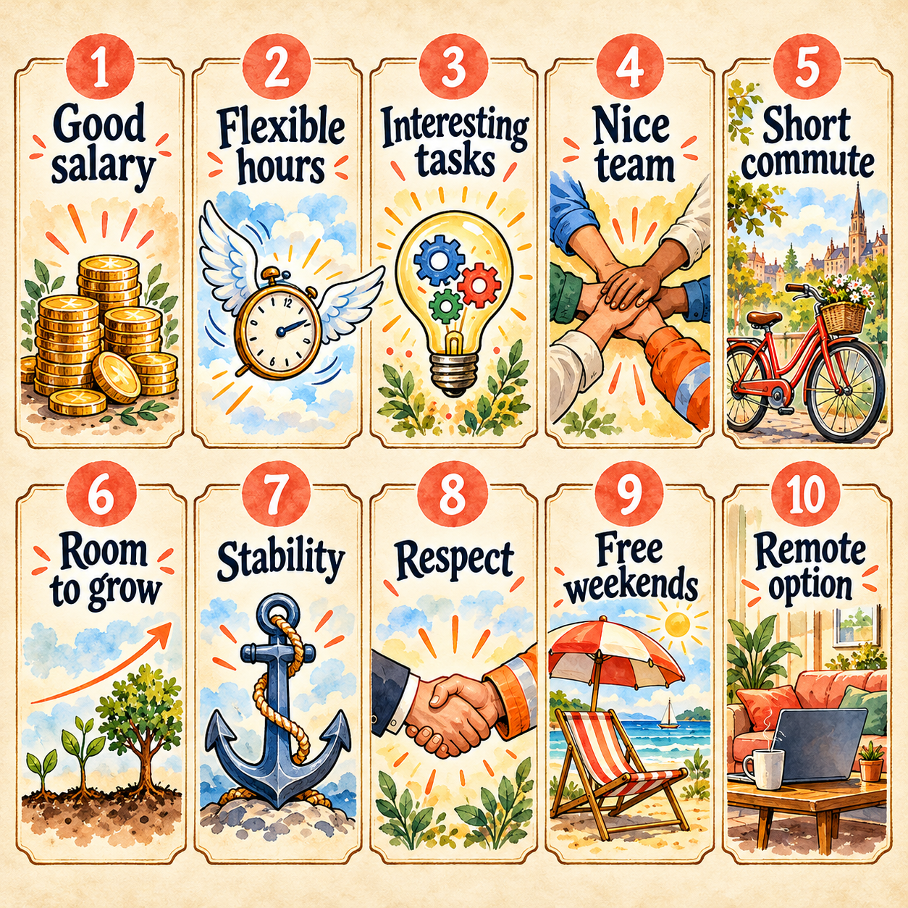

Jobs & Hobbies · The World of Passive & Conditionals
One full pass through the English world of work and free time — from bricklayers and bodyguards to vets, tailors and part-time jobs; from stamp-collecting at eight to taking up chess at thirty. Along the way we own twenty new words, drill the Passive voice across all eight tenses (is played · was built · has been hired · will be renovated), tame all five conditionals plus wish, add the phrasal verbs to take up / give up / apply for, retell the «Unusual Jobs: Bodyguard» reading and finish with a 100-word writing on your dream job.
Warm-up · What do you already know?
Eight quick multiple-choice questions on jobs & hobbies vocabulary. Answer from memory first, then check.
Warm-up · 15 phrases modern teenagers actually use about jobs & hobbies
tap a card to flip · then answer the 6 questions below using at least 5 of these jobs/hobbies phrases
Now try — 6 warm-up questions
🎯 Словарный тренажёр · вставь пропущенную фразу счёт: 0/15
15 предложений с пропуском. Под пропуском — русская подсказка. Печатаем английскую фразу, ответ проверяется на выходе из поля.
Vocabulary · 20 jobs & hobbies words to own

Tap each card to flip. These words come back in every section — the Bodyguard reading and the Conditionals drill especially.
📖 Full Topical Vocabulary from the textbook (Afanasyeva 8 · Unit 1 · pp. 5-55)
Six grouped tabs. Every term has IPA transcription + Russian translation + example. These are the exact words the exam draws from.
Vocabulary speaking · 10 rounds, 10 games · jobs & hobbies
Say the words. Play with them. Every round is a different game — no two the same.
- Why do you want to apply for a job here?
- Have you ever been hired for a similar role before?
- Why were you fired from your last place?
- Explain why you decided to apply.
- Describe one job you were hired for or fired from and give a reason with «because…».
Vocabulary practice · match job to description + fill passive
Two rounds. Round 1: match 12 definitions to their terms. Round 2: complete 10 sentences with the right vocab word.
Round 1 · Definition → Term (12 items)
Each dropdown lists all 12 terms in alphabetical order. Pick the one that fits.
Round 2 · Gap-fill (10 sentences)
Type the missing vocab term. Multiple forms may be accepted (e.g. «immense / immensely»).
Features of a Good Job / Dream Job

Pick 5 features you think are the MOST important (green) in a job, and 5 you think are the LEAST important (red). Compare with your partner and defend your choice.
Features-of-a-Job practice · gap-fill from the checklist
Ten sentences describing a job. Type the missing feature from the checklist above.
Bodyguard · Two Sides of the Job

Read both columns. Which side wins for you? Then answer the three discussion questions.
- The salary is well above the market average — overtime pays double.
- You travel with the client — hotels, premieres, matches, sometimes abroad.
- You meet famous people — politicians, actors, business VIPs — up close.
- Serious ex-army or ex-police training is paid for by the agency.
- The job keeps you very fit — martial arts and gym are part of the contract.
- You wear expensive, well-cut suits that the agency provides and cleans.
- A sense of real purpose: you are literally keeping another person alive.
- You develop sharp observation skills that stay with you for life.
- Good bodyguards are always in demand and can choose their clients.
- You could be injured or even killed if a real attack happens.
- Nights, weekends and public holidays are often your busiest shifts.
- Your private life suffers — you can't plan a weekend with your family.
- You must be alert for 10–12 hours — total concentration is exhausting.
- The client's mood decides your day — rude or demanding clients are common.
- You carry heavy responsibility: one small mistake can cost a life.
- You can't drink, go out loud or relax when the client is around.
- Travel sounds glamorous but you mostly see hotel corridors and car parks.
- Job security depends on the client — if they fire the agency, you're out.
Discussion · 3 questions
Bodyguard practice · advantage or disadvantage?
Round 1: sort 10 statements into advantage / disadvantage. Round 2: fill 8 sentences with the missing verb, adjective or noun from the two columns above.
Round 1 · Sort 10 statements
For each statement, click «advantage» or «disadvantage». Wrong picks turn red; right picks turn green.
Round 2 · Gap-fill (8 sentences)
Type the missing word — verbs, adjectives and nouns pulled from both columns above.
Unusual Jobs: A Bodyguard · adapted from Afanasyeva Unit 1

Read the skeleton retelling. Then rewrite it in your own words using every word from the bank below at least once.
Edward Foreman had been the verger of St Peter's Church in London for sixteen years. He loved the quiet church, the smell of old wood and the dignified silence during the service. But one day a new vicar arrived. He was young, energetic and, unfortunately, irritated by small imperfections. In the middle of a business talk he suddenly discovered that Edward could neither read nor write.
«I'm sorry, Foreman,» said the vicar, «but I can't have a verger in this church who is illiterate. You'll have to go.» Edward listened with dignity, took off his official robes and walked out into the cold London street. He wasn't angry. He was only very sad.
Walking down the High Street, he suddenly wanted a cigarette, but there was no tobacconist anywhere. He walked three streets and had to withdraw all the way to Victoria before he found one. On the way home an idea hit him: there must be dozens of streets in London without a small tobacco-and-sweets shop. Two weeks later, with all his savings, he opened one.
The little shop was an immense success. Within a year he opened a second one, then a third. Ten years later he owned a chain of twelve shops. The bank manager invited him to invest thirty thousand pounds and asked him to sign a couple of forms.
«I'm sorry, sir,» said Edward, «but I can't sign. I can neither read nor write.» The manager looked at him with amazement. «Do you mean to say, Mr Foreman, that you have built up this business without being able to read or write? Good heavens, man, what would you be if you could?»
«Well, sir,» said Edward with a quiet smile, «if I could read and write, I'd still be a verger at St Peter's Church.»
Phrasal verbs around work & hobbies · take up / give up / apply for / look into
One root, five directions. Learn the table, then fill six sentences with the right form.
| Form | Meaning (RU) | Example |
|---|---|---|
| put on | надеть (одежду); прибавить в весе | She put on a red coat and left the fitting room. |
| put off | отложить, перенести; отпугнуть, отбить желание | They put off the sale until next Saturday. · The long queue put me off buying anything. |
| put away | убрать на место; отложить (деньги на что-то) | She puts away £50 every payday for a summer trip. |
| put back | положить обратно (на полку) | He looked at the price tag and quietly put the jumper back. |
| put up with | терпеть, мириться с | I really can't put up with shop assistants who ignore you. |
Fill the gap · six sentences
Passive voice · 8 tenses + Conditionals 0/1/2/3/mixed + wish

Four small rules · three practice blocks · the jobs vocab from today in every sentence.
Theory · four small rules
Block A · Rewrite active → passive · 8 sentences
Block B · First conditional · fill the gap · 8 sentences
Block C · Second conditional + wish · 6 sentences
OGE Grammar · Tasks 20-28 · Word transformation · 9 gaps · Jobs topic
A single short text with 9 gaps. Read carefully and type the correct grammar form of the word in CAPS.
OGE Vocabulary · Tasks 29-34 · Word formation · 6 gaps · EMPLOY / CARE / COLLECT / CREATE
Add a suffix / prefix so the word in CAPS becomes the right part of speech. Watch for negative prefixes (un-, in-, dis-).
Reading · Hobbies in Britain · by age (Afanasyeva Unit 1 stage p.5)

Interview text in the style of Afanasyeva Unit 1 Ex 15. Read once slowly, then attack the 12 comprehension questions and 10 sentence completions.
Q: What hobbies are the most popular with young British children?
— Younger British children, aged roughly five to eleven, are often very keen on simple outdoor activities. Cycling, football and swimming top every survey. In fact, most state primary schools still offer free swimming lessons at least once a week — it's part of the national curriculum.
Q: What do teenagers prefer?
— Teenagers between twelve and eighteen spend a lot of time on screens — gaming, social media and streaming music. However, football is still the number-one practical hobby, and more than 1.5 million teens play in local clubs on Saturdays. Dance classes and skateboarding have also made a strong comeback in the last five years.
Q: And young adults, people in their twenties and thirties?
— They go in for fitness in a big way. Running, cycling and gym memberships are the most popular. Many take up a creative pastime as well — photography, cooking classes or learning a musical instrument. DIY and home improvement is a classic British adult pastime, and visits to garden centres on Sundays are almost a national ritual.
Q: What happens in middle age?
— In middle age — roughly forty to sixty — British people often turn to gardening, cooking and travelling. According to a recent YouGov survey, seven out of ten middle-aged adults say gardening is their favourite leisure activity. Watching football and rugby at the pub is also a very social hobby for many men of that age.
Q: And in retirement?
— Elderly people, 65 plus, stay surprisingly active. Walking groups, bowling clubs and birdwatching are extremely popular. Knitting is making a serious comeback — not just among grandmothers; it has become quite fashionable with young hipsters too. In small villages a bingo night is still one of the social highlights of the week.
Q: Is there anything that unites all these age groups?
— Yes — a love of pets, especially dogs. Walking the dog is probably the most common British hobby across every age. More than a third of all British households have a dog, and dog-walkers meet every morning in every park from Cornwall to Scotland.
Discussing the text · 12 comprehension questions
Ten sentence completions from the text
Type the exact word or phrase from the interview.
Reading 2 · «Why Some Jobs Pay More Than Others»
![Museum-catalogue still-life timeline of six forms of money on a long oatmeal linen table — a clay pot with a heap of barley grain (barter); a cowrie-shell and wooden-bead bracelet (shell money); brass hand-scales with two gold Roman coins (metal coinage); a folded 19th-century banknote (paper money); a leather wallet with a chip card sliding out (plastic); a smartphone with a glowing contactless icon (digital). Old world map on the wall behind, small brass numbered plaques under each object, warm side lighting](assets/img/scene-why-jobs-pay-more.png)
The textbook reading on the four functions of money — plus a 12-item multiple-choice comprehension quiz.
We use money every day to pay for things we buy. We pay with either coins or paper money. This sort of money is known as cash. There is also another kind of money. It includes cheques (checks), credit cards and travellers' cheques.
The idea of having such a thing as money is one of the most fascinating ever developed by man. But many people don't know where this idea came from, or why money is valuable. Thousands of years ago, money was not used. Instead, man had the «barter» system. This meant that if a man wanted something he didn't have, he had to find someone who had it. Then he had to offer him something in exchange. And if that man didn't like what he was offered in exchange, the first man couldn't get what he needed.
In time, certain things came to be used as money because practically everyone would take these things in exchange. In the past, people used many things as money: shells, beans, cocoa beans, salt, grain, tobacco, skins, and even cattle. But coins are much easier to use than, say, cattle. They are easy to carry about.
Coins were first used in China. They were made of cheaper metals. People also started to use paper money. It cannot mattered that the money itself had no real value. It was backed by the government. And everybody uses this money. What makes money valuable? What use does it have for us?
First, it makes possible exchange and trade. Imagine you want a bicycle. You're willing to work hard for it by mowing lawns. But the person for whom you mow the lawn has no bicycles. He pays you with money and you take this to the bicycle shop and buy your bicycle. Money made it possible to exchange your work for something you wanted.
Second, money is a «yardstick of value». It was used to measure and compare the values of various things. You're willing to mow the lawn for an hour for 50 cents. A bicycle costs $25. You now have an idea of the value of a bicycle in terms of your work.
Third, money is a «storehouse of value». You can't store up your tomatoes for a long time, because they can spoil. But if you sell them you can store up the money for future use.
Fourth, money serves as a «standard for future payments». You may be paid by giving your word and promise to pay the rest later. You will not pay in eggs or tomatoes or baseballs. You and the bicycle store owner have agreed on exactly what you pay later. You use money as a unit in which later payments can be made.
Twelve comprehension MCQs
Read once, choose once. Score is 0-12.
Conditionals · 0 / 1 / 2 / 3 / mixed + wish · drill
Eight tricky pairs · one irregular table · sixteen practice items.
Theory A · irregular degrees of comparison
badly → worse → worst
little → less → least
much → more → most
far → farther / further → farthest / furthest
Theory B · eight tricky adverb pairs
| Adverb | Meaning | Example |
|---|---|---|
| hard | усердно, сильно | It's raining hard. You should work hard at your English. |
| hardly | едва, с трудом | I'm afraid I have hardly any money left. |
| late | поздно | Better to do things late than never. · John came too late. |
| lately | недавно, за последнее время | What have you been doing lately? Have you seen him lately? |
| high | высоко (буквально) | How high can you jump? He threw the ball high into the sky. |
| highly | высоко (в переносном смысле) | She speaks highly of her teachers. We think very highly of him. |
| near | рядом, близко | We live near London. He was standing near the door. |
| nearly | почти | It is nearly five o'clock. I nearly missed the train. |
| most / mostly | очень; больше всего / главным образом | I'd most certainly like an ice cream. · The weather was mostly dull that week. |
| right / rightly | правильно (глагольно) / справедливо, правильно (с причастиями) | I hope I've written it right. · The winner was rightly chosen. |
| wrong / wrongly | неверно (с глаголом) / неправильно (с причастием) | You've got it all wrong! · He was wrongly punished for something he had not done. |
| wide / widely | широко (физически) / широко (в переносном смысле) | Please open the window wide. · Her books sell widely. |
Practice A · Choose the right adverb · 10 items
Practice B · Comparative / superlative MCQ · 6 items
Focus · reported speech in job interviews · what vs which
Two mini-rules · eight verbs of dressing/undressing · twelve practice items.
Theory A · what vs which
WHICH — a limited choice, 2-5 options are visible or implied.
Theory B · eight verbs of dressing / undressing
| Verb (put on) | Verb (take off) | Where you use it |
|---|---|---|
| to lace up | to unlace | trainers, boots, shoes with laces |
| to button up | to unbutton | a shirt, a jacket, a cardigan |
| to buckle up | to unbuckle | a belt, sandals with a buckle, a wristwatch strap |
| to zip up | to unzip | an anorak, a rucksack, a pair of jeans |
Practice · 12 items
Type the missing verb (present or past) or pick what / which.
Interview English · in the interview room, on the phone

🛎 Greeting & opening
🧥 Looking for a specific item
👗 Fitting room · trying on
💷 Prices, discounts & sizes
💳 At the till · payment
🔁 Returns, complaints, exchanges
Role-play A · Buying a blouse (Ex 39·1)
Shop assistant: Are you being served?
Customer: …
Shop assistant: I can do the size, but not the colour. These come in navy and dark green.
Customer: …
Shop assistant: Certainly, I'll get you a navy blouse size 12.
Customer: …
Shop assistant: Here you are. The fitting room is at the back if you want to try the blouse on.
Customer: …
Shop assistant: How does it fit?
Customer: …
Shop assistant: Very good. Would you like to follow me to the cash desk? How would you like to pay?
Customer: …
Shop assistant: Yes, we do. We take Visa, Mastercard and Amex.
Customer: …
Shop assistant: Here is your receipt. Thank you for shopping with us.
Role-play B · Buying shoes (Ex 39·2)
Customer: Hello. Could you help me?
Shop assistant: …
Customer: I'm looking for a pair of black low-heel shoes for everyday wear.
Shop assistant: …
Customer: 7 ½.
Shop assistant: …
Customer: I like this pair. They are just what I want. May I try them on?
Shop assistant: …
Customer: They are a bit tight on me, I am afraid. Can I have a pair half a size larger?
Shop assistant: …
Customer: Grey? May I look at them?
Shop assistant: …
Customer: They feel wonderful. How much are they?
Shop assistant: …
Customer: I'll pay cash.
Shop assistant: …
Customer: Thank you for your help. Goodbye.
📚 Homework · pick one
- Fashion show · 60-second monologue. Describe one of the five outfits from Unit 3 Ex 76 as if you were the commentator: «Ladies and gentlemen, let me present a new outfit designed by … As you can see it's …». Record and send.
- Design an advertisement. Pick one — (a) a new shopping centre, (b) a new bank, (c) a new fashion house — and design it as a one-page ad. Attach it as a photo or PDF (Unit 3 Project Work, p. 138).
- Translate «Leisure». The poem by W. H. Davies (p. 138): try your own Russian translation of the first eight lines. Send the original + your translation.
- Beatles homework. Listen to «Can't Buy Me Love» (p. 137), then in 5-7 sentences agree or disagree with the message. Use at least three modal verbs and two adverbs from Section 8.
- Written retelling of «The Verger». 80-140 words, using every word from the bank in Section 3.